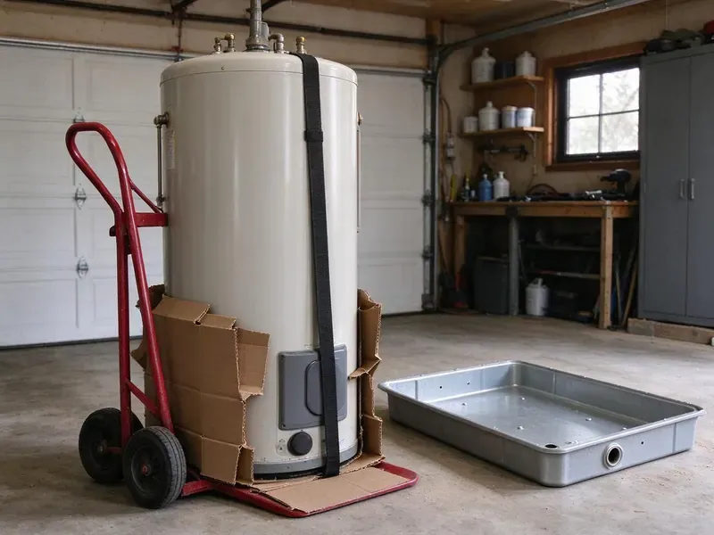

Water Heater Installation in Minot AFB, ND
For professional water heater installation in Minot AFB, ND, trust the licensed plumbers at HPN Plumbing. We handle all types of units, ensuring comfort and efficiency for your household.
- Old Tank Haul-Away Included
- Quality Brands
- Clear Pricing
- Trusted Brands

Upgrade to a reliable, efficient water heater in Minot AFB, ND.
We carry common 40 and 50 gallon models on our trucks for faster installs.
Water Heater Installation and Replacement in Minot AFB, ND
HPN Plumbing specializes in expert water heater installation across Minot AFB, ND. We understand the important role hot water plays in your daily life, which is why we offer prompt and precise installation of all major water heater types. Our certified plumbers ensure your new unit is sized correctly, installed safely and operates efficiently.
Our expertise includes:
- Careful sizing for optimal hot water capacity.
- Expansion tanks, drain pans and code-compliant relief lines
- Traditional tank and tankless water heater installation.

Additional Plumbing Installation Services in Minot AFB, ND
We install water heaters, pumps, lines, and fixtures across Minot AFB, ND with careful, permitted work that passes inspection the first time.


Customers
Why Choose HPN Plumbing for Water Heater Installation in Minot AFB, ND?
Choosing HPN Plumbing for your water heater installation means opting for reliability and peace of mind. Our experienced plumbers deliver exceptional service from start to finish.
- Local Expertise, We understand the unique plumbing challenges and water conditions in North Dakota, providing tailored solutions for your home.
- Quality Assurance, We only install well-built water heater brands known for their durability and energy efficiency, ensuring long-lasting performance.
- Local Knowledge, Our team understands North Dakota climate and water conditions, suggesting the best water heater types for durability.
Citywide Coverage
HPN Plumbing proudly serves every neighborhood in Minot AFB and the surrounding areas for all water heater installation needs. Whether you're in an older district or a newer subdivision, our plumbers are ready to provide prompt and professional service.
Experienced Team
Each plumber at HPN Plumbing is well trained in the details of water heater installation, understanding factors like water pressure, venting requirements and fuel sources. Their expertise means your new water heater will perform well for its lifespan.
Safety-First Approach
Safety and code compliance are top priorities for every water heater installation we perform. Our plumbers carefully follow all local Minot AFB and North Dakota plumbing codes, as well as manufacturer specifications. This ensures the safe operation of your new unit and protects your home and family.
Trusted Certified Minot AFB Plumbing Services Professionals
At HPN Plumbing, we take pride in providing certified plumbing services throughout Minot AFB, ND. Backed by recognized industry credentials, our experienced plumbers combine technical skill with genuine customer care. Whether it is repair, installation, or maintenance, we follow strict safety and quality standards to deliver lasting results you can trust.
Call Us Now PHCC Plumbing Contractor Recognition
PHCC Plumbing Contractor Recognition Better Business Bureau (BBB) Accreditation
Better Business Bureau (BBB) Accreditation Angi Certified Pro
Angi Certified Pro ISO 9001 Quality Management Certification
ISO 9001 Quality Management CertificationDurable Water Heater Installation Services in Minot AFB, ND
Gas Water Heater Replacement in Minot AFB
Many homes in Minot AFB use natural gas for their water heaters due to its efficiency and lower operating costs. When replacing a gas water heater, precise gas line connections, proper ventilation and carbon monoxide detection are essential. Our licensed plumbers are experienced with gas appliance installation, ensuring every safety measure is met. We check for leaks, test the igniter and confirm proper exhaust, adhering to all local North Dakota codes. You can trust us to safely and effectively install your new gas water heater, providing reliable hot water.

Tankless Water Heater Installation in Minot AFB, ND
Tankless water heaters provide on-demand hot water, saving energy and space, and they are more and more popular in North Dakota homes. Our plumbers specialize in installing these highly efficient units, ensuring proper gas line sizing or electrical service upgrades if needed. We also address venting requirements, which are often different from traditional units. While the upfront cost can be higher, the long-term energy savings and endless hot water supply make them an appealing option for many homeowners in Minot AFB. We'll help you choose the right model for your specific needs.
Emergency Water Heater Replacement in Minot AFB, ND
A sudden water heater failure can be a major inconvenience, particularly since hot water is essential year-round. If your water heater bursts, leaks badly or completely stops working, HPN Plumbing offers emergency replacement services in Minot AFB. We put first urgent installations to restore your hot water quickly and efficiently. Our plumbers arrive with the necessary tools and common replacement units, or we can source specific models fast. We aim to minimize damage and get your home back to normal with little delay, even if it's after hours.
Gas Tank Water Heater Installation in Minot AFB
Gas tank water heaters provide strong recovery and are common in many local homes. We install 40, 50 and 75 gallon models with proper venting and combustion air. Each install includes a new gas connector, sediment trap and shutoff valve. We check draft and test for gas leaks. Gas units are a good choice for families with high hot water demand.
Gas Water Heater Installation in Minot AFB, ND
Gas water heaters are a popular choice in Minot AFB due to their efficiency and faster recovery rates. Our licensed plumbers meticulously install gas lines, make sure of secure connections and verify proper ventilation to prevent carbon monoxide buildup. We also install required expansion tanks and check for gas leaks, closely following all local safety codes.
Expansion Tank Installation in Minot AFB, ND
Many homes have a pressure reducing valve or check valve that creates a closed system. When water heats and expands, pressure can rise and stress pipes and relief valves. An expansion tank absorbs that extra pressure. We install and pre-charge the tank to match your water pressure. This protects your new water heater and pipes.
Water Heater Expansion Tank Installation in Minot AFB
Many plumbing codes require the installation of an expansion tank with a new water heater, especially in closed-loop systems. North Dakota enforces a statewide plumbing code based on the Uniform Plumbing Code, and plumbers must hold a state license. An expansion tank protects your water heater and plumbing system from excessive pressure buildup, which can be caused by the heating process. Our installation service includes correctly sizing and installing the expansion tank to ensure proper system operation and prevent premature wear on your new water heater and other plumbing fixtures in Minot AFB. This small component offers significant long-term protection.

Hybrid Heat Pump Water Heater Installation in Minot AFB, ND
Hybrid heat pump water heaters pull heat from surrounding air, which can make them efficient in warm garages and utility rooms. We install models from Rheem and A.O. Smith with proper condensate drainage. These units need adequate air space and clearance. They may qualify for utility rebates or tax credits. We help you decide if a hybrid is right for your home.
Water Heater Installation Near Me in Minot AFB, ND
If you're searching for 'water heater installation near me' in Minot AFB, ND, look no further than HPN Plumbing. Our local team is well positioned to provide prompt and efficient service to homeowners and businesses throughout the area. We pride ourselves on quick response times and expert craftsmanship.
When you search for "water heater installation near me" in Minot AFB, ND, HPN Plumbing is your trusted local expert. We are deeply familiar with the plumbing and water conditions in the area. Our proximity allows us to provide rapid response times and personalized service to all our neighbors.
HPN Plumbing at a Glance
- Fully licensed plumbing team covering Minot AFB, ND
- 24/7 emergency service with same-day scheduling
- Clear written estimates, no hidden fees
- 4.9-star rated by 408+ North Dakota customers
Minot AFB Map
Minot AFB Information
- Population
- 5,017
- Area codes
- Local
- Service area
- Minot AFB and communities within 40 miles
- Nearby
- Minot, Watford City, Williston, Mandan
Having a properly installed water heater is crucial for homes in Minot AFB, ND, where families need reliable hot water year-round for comfort and sanitation.
Expert Services
Trust our professionals for reliable HPN Plumbing solutions in Minot AFB, ND.
Our Specialized Plumbing Services in Minot AFB, ND
At HPN Plumbing, we provide a complete range of plumbing services across Minot AFB, ND. From leak detection to full system installations, our team ensures fast, precise, and affordable service for both residential and commercial properties. Explore our core services below:


How Our Water Heater Installation Process Works in Minot AFB, ND
Our water heater installation process is quick, safe and designed to restore hot water quickly.
Request a Quote
Contact HPN Plumbing by calling (701) 403-1348 or filling out our online form to discuss your water heater needs. We will schedule a good time for a plumber to assess your current system and provide an honest, upfront quote for a new installation.
Expert Assessment
Our licensed plumber will visit your Minot AFB home to evaluate your hot water usage, existing plumbing and space requirements. They will recommend the best type and size of water heater for your particular situation and answer any questions you may have.
Professional Installation
Once you approve the quote, our team will proceed with the installation of your new water heater. We handle everything from safely disconnecting and removing your old unit to installing the new one, making all necessary connections and confirming proper venting and code compliance.
Frequently Asked Questions About Water Heater Installation in Minot AFB
The cost of water heater installation in Minot AFB, ND can range from $1,200 to $4,000 or more, depending on the type of unit (traditional tank vs. tankless), its capacity, fuel type (gas or electric) and any needed plumbing or electrical upgrades. Tankless units generally have higher installation costs due to more complex venting and utility requirements. We provide a written, upfront quote after assessing your particular needs.
The decision to repair or replace often depends on the age of your unit, the cost of the repair and its energy efficiency. If your water heater is over 10 years old, often breaks down, or the repair cost is more than 50% of a new unit, replacement is often the more economical choice. Newer models also offer significantly better energy efficiency.
Most households of two to four people do well with a 40 or 50 gallon tank. Larger families may need a 75 gallon tank or a tankless unit sized by flow rate.
While it might seem like a DIY project, water heater installation involves working with gas lines, high voltage electricity and water connections, all of which carry serious risks if not handled correctly. Improper installation can lead to leaks, gas explosions, electrical fires and carbon monoxide poisoning. It can also void your warranty, and local codes typically require a licensed plumber for this work.
HPN Plumbing installs all major trusted brands of water heaters, including Rheem, Bradford White, A.O. Smith and Noritz. We work with both gas and electric models, as well as various sizes and efficiencies. Our team can help you choose the best brand and model to suit your hot water demands and budget.
Manufacturer warranties typically range from 6 to 12 years on the tank and parts. We also warranty our installation labor.
Common signs that you might need a new water heater include a lack of hot water, rusty or discolored water coming from the hot tap, banging or rumbling noises from the tank, visible leaks around the base of the unit and an age of 10 to 15 years or more. If you notice any of these issues, it is best to have a professional inspection.
New water heaters typically come with a manufacturer's warranty on the tank and components, usually ranging from 6 to 12 years. HPN Plumbing also provides a labor warranty on our installation work, ensuring peace of mind. We will discuss exact warranty details for your chosen unit during the consultation.
What People Are Saying About Our Plumbing Experts?

Daniel K.
A pipe burst at 11 pm and they actually answered. The plumber showed up within the hour, shut everything down, and had us back to normal the next morning. Could not ask for more.
Emergency Plumbing · Bismarck, ND
Robert G.
The trenchless sewer replacement saved our front yard. They walked us through the camera inspection footage first so we knew exactly what we were paying for.
Sewer Line Replacement · Watford City, ND
Patricia H.
We had a slab leak that two other companies could not find. HPN Plumbing located it in under an hour, explained our options, and the price matched the quote to the dollar.
Slab Leak Repair · Minot, ND
Sofia M.
Two new toilets installed in one visit, no mess left behind, and the tech even adjusted a faucet he noticed was dripping. Fair pricing and really friendly.
Toilet Installation · Watford City, NDJames P.
Our commercial plumbing system had a leak under the sink, and HPN Plumbing handled it professionally. The plumbers arrived quickly and restored everything without disruption to our customers.
Commercial Plumbing · Williston, ND
Emily R.
I called HPN Plumbing for plumbing repair, and the technician was fast, polite, and thorough. They explained the problem clearly and fixed it the same day. I will definitely hire them again. Highly recommended!
Plumbing Repair · Mandan, ND